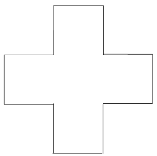
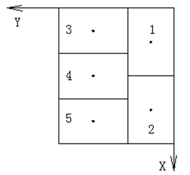

1、工业机器人由________、________和________三个基本部分组成。
1、工业机器人一般有四个坐标系，下列不属于机器人坐标系的是（ ）。
2、位置寄存器轴指令在位置寄存器上完成计算操作。PR[i, j]中的元素 i 和J分别代表（ ）。
3、标签指令LBL用于指定程序执行的分支跳转的目标。标签指令一经执行，对于（ ）是适用的。
4、下列关于机器人安全操作描述正确的是（ ）。
5、标签指令LBL[value] 中的value可以取（ ）。
6、装盘码垛是指在托盘上装放同一形状的立体形包装物品，可以采取各种交错咬合的办法码垛，这样可以保证托盘具有足够的稳定，甚至不需要再用其他方式加固。下列属于托盘上货体码放方式的是（ ）。
7、在执行以下程序过程中，工业机器人将调用几次abc子程序（ ）。
R[1]=1
LBL [1]
IF R[1]>4 JMP LBL[2]
CALL abc
R[1]= R[1]+1
JMP LBL[1]
8、在托盘上装放同一形状的立体形包装物品，可以采取各种交错咬合的办法码垛，这样可以保证托盘具有足够的稳定性。相邻两层物品的摆放旋转90°角，一层呈横向放置，另一层呈纵向放置。层间有一定的咬合效果，这种码放方式是（ ）。
9、由P[1]点开始沿着过P[2]点的圆弧以2000mm/sec的速度运动至P[3]点的程序为（ ）。
10、机器人运动的进给速度，由程序指令直接指定，直线运动指令的进给速度的单位可以为（ ）。

